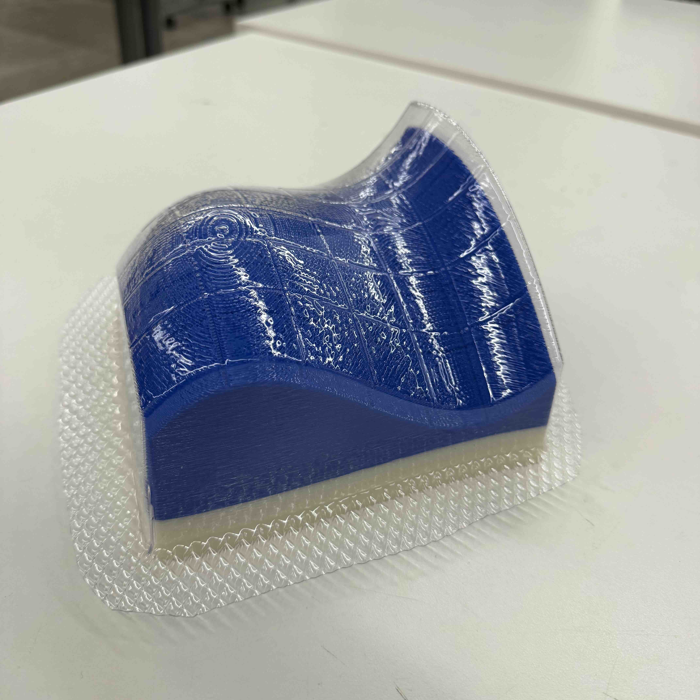
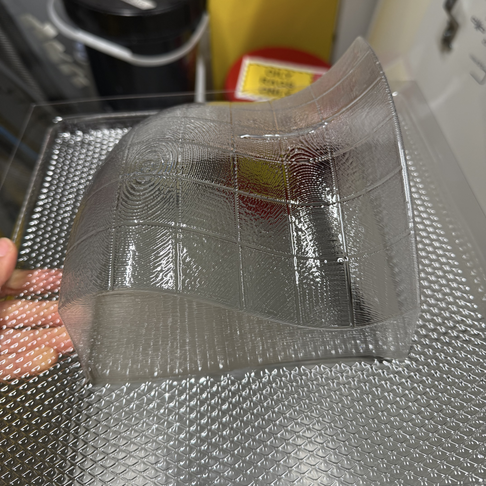

Math 21a Models
Completed: May 2026

Thermoformed using 0.04" PETG on the Formech 686
Description:
I was hired by the Harvard Math Department to fabricate new thermoformed surface
models for Math 21a. These models are created by vacuum-forming plastic over a
3D-printed buck of the function
which is used in the course to help students visualize multivariable calculus concepts.
The clear, durable surfaces allow students to draw on them and physically explore
level sets, contours, and partial derivatives in an active-learning setting.
See also: Manipulative Calculus
Materials:
- Function Graph by stepanp21 on Thingiverse, Printed in PETG
- Clear PETG 0.04”x12”x12” from McMaster Carr
Machine settings (for Formech 686):
I used the Formech 686 machine located at the
Harvard SEAS REEF makerspace.
These settings are specifically tuned to this machine:
The auto vacuum and auto level options should be turned on (green).
When the heater is fully ready (takes at least 15 min), the heating time for 0.04” Clear PETG is 52 seconds. This may vary slightly, but a reliable indicator is if you look at the sheet at 22 seconds, the surface should visibly go from distorted to flat as the auto level setting kicks in.
